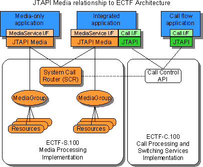

The ECTF S.410 API defines the MediaService and Resource APIs for utilizing the media streams of calls. The ECTF S.410 API is suitable for applications doing content processing, independent of the call setup, signalling and routing. For example, this API is designed to simplify applications that implement interactive voice response (IVR) systems, auto-attendant or robotic agents (versus live operators), voice mail, speech recognition, text-to-speech, fax, integrated messaging, etc.
The ECTF S.410 API (also called 'JTAPI Media') is an optional package of the Java Telephony API (JTAPI). It is related to, and interoperates with, the core JTAPI package and other JTAPI extension packages. The ECTF S.410 API is a Java language expression of the ECTF media services API and Architecture. It is related to the ECTF S.100 C language API that preceded the Java version historically.
The ECTF architecture defines a framework for system services that may be used by media applications. The ECTF architecture includes services for managing media resources and calls as well as APIs for directly manipulating media resources and calls.
The design of JTAPI Media permits applications that are providing a "media only" service to use high-level, framework-supplied services for call management. Such applications do not need to use any of the JTAPI core or call control methods.
More complex applications can use the full range of JTAPI core and extension package APIs. Methods are provided to allow applications to integrate media services with other JTAPI packages in a smooth and natural manner.
The following subsections explain the ECTF architecture and how it relates to JTAPI and the JTAPI Media package.
Note: This version of JTAPI Media API replaces the Media package defined in JTAPI-1.2. All classes in the JTAPI-1.2 release of the Media package were deprecated in the JTAPI-1.3 release. The new media package is defined to ensure there are no namespace overlaps allowing the coexistence of both packages for a transition period.
The ECTF architecture allows the separation of media applications and the services for media processing from the applications and services for call processing. The ECTF architecture includes many services:
JTAPI Media is compatible with the ECTF architecture, and incorporates the ECTF concepts of Groups, Resources and the System Call Router. However, JTAPI Media does not expose all the ECTF architectural components. The following diagram shows the relationship between the ECTF architecture and JTAPI/JTAPI Media.

Figure 1
The ECTF architecture defines additional components and interfaces which may be used when implementing the APIs. The ECTF "Architecture Framework Whitepaper" contains additional information. It can be downloaded from: http://www.ectf.org/pages/pubdocs/arch_fr.pdf
The key feature of this architecture is that detailed call control and network line signalling can be handled outside of the media service application. Which has several benefits:
From a media application's point of view, there is one module (an application or suite of applications) that manages call flow. Shown in the diagram as the SCR (System Call Router), that module is chartered with detecting inbound calls, doing call type discrimination, managing call progress signaling, routing the call to the appropriate destination, and generally managing the overall life-cycle of the call. That call management service is developed using the usual techniques for call processing; in particular, the service may be implemented using JTAPI call control. The implementation of the call management services may be large/complex or simple/basic, depending on the requirements of the deployment environment.
In an enterprise call center, the central call management functionality is part of the underlying ACD or call center management application; ultimately calls are directed to agents or queues. In such an environment, some of the "agents" may be "robotic agents". That is, the queue or terminal to which a call is directed may be handled by a media service application implemented using JTAPI Media (or ECTF-S.100). These robotic agents may query the caller for an account number, or query the caller for the type of service required, play or record a message, or attempt to entertain/annoy the caller in some other way.
In a desktop, terminal, or appliance scenario, where multiple applications or functional modules cooperate to use a single line/connection, the "central call management functionality" is implemented by the platform service that manages the line protocol, does call type discrimination, and routes calls to various modules to process voice, fax or other types of calls. That is, for a single resource (the telephony device or modem) to be shared by multiple, independent applications, some platform service must be responsble for managing the shared resource. The manager is associated with the nature of the device and owns and controls its initiation and maintenance, but allows other applications to provide content or services for that device.
The manager is the "traffic cop" responsible for routing calls to the correct service application. For example, fax calls may be routed to a module that enables the fax modem and captures the incoming fax in a message store. Data calls may be routed to a module that configures IP/PPP/HDLC and implements the platform's IP subsystem. Voice calls may be routed to a module that alerts the user, waits for a "user gesture" that indicates "answer it, I want to talk", answers the call, attaches the local speaker and microphone, and waits for further input from the user.
The intention of this architecture is to enable each media service (voice recording, fax transmission, etc.) to be composed independently and then integrated with the other services. Each service may rely on the fact that basic call control, call type discrimination, line and resource allocation, and the flow of calls between applications will be handled by some framework component outside the application. However, the application may take explicit control using the other capabilities such as the JTAPI core or extension packages. The JTAPI MediaService interface defines the interface between an application and the call and resource management components of the framework.
Because applications delegate these responsibilities to the framework, they can easily be integrated into a variety of framework implementations and with each other. This is similar to the way graphic "component" applications delegate their size and placement to containing applications or display managers. If each application is allowed, encouraged or required to perform these services, conflicts will arise when multiple applications are integrated.
In this model, the media service object (either in a terminal or as a robotic service agent) sees a very narrow view of "call control". The basic loop is to:
In JTAPI Media, the application interacts primarily with the BasicMediaService class. With reference to Figure 1, the methods of BasicMediaService can be divided into three categories, reflecting the target of the method:
The bind and release methods and the generic media group methods are defined and documented in the MediaService interface. BasicMediaService extends that to include the interfaces for the defined (standard) resources. The framework is designed to be extensible, and allows additional Resources to be added, in which case BasicMediaService can be specialized or extended to include the additional resource interfaces.
BasicMediaService is defined as a class so that application developers can directly create or extend the class to define their own service implementations. As a class, BasicMediaService allows the supplier of a javax.telephony.media package to easily control access to and the implementation of any underlying components. For example, many implementations of the JTAPI Media interfaces want to ensure that resources are not susceptible to abuse from malicious, failing or merely misinformed applications. BasicMediaService provides a level of indirection between the application and the actual implementation classes. Presenting BasicMediaService as a class and using the bind/release concept to access media resources also avoids the problems of stale handles or "dangling references" to MediaGroups or Resources which the application can no longer use.
The bind and release methods warrant a few definitions and additional explanation:
A MediaTerminal extends the JTAPI Terminal interface indicating that the Terminal is capable of providing media streams for computer/DSP processing. The media streams can be connected to various Resources that generate or consume the stream content. The collection of Resources attached to a MediaTerminal constitutes a MediaGroup object.
When a call is directed to a MediaTerminal, the SCR that manages that Terminal determines which application will initially control that MediaTerminal. The MediaTerminal streams are connected to a MediaGroup (containing Resources as specified in the application's ConfigSpec), and that MediaGroup is bound to the application's MediaService object.
While it is bound, methods invoked on the MediaService are forwarded to the MediaGroup.
When the call is directed away from the MediaTerminal (by transfer or disconnect), the application retains the MediaService object, but it is released (or unbound) from the MediaGroup. The framework can immediately reuse the MediaTerminal, the MediaGroup and any Resources without interference from the previously bound application.
The JTAPI Media API is mainly concerned with how an application handles the media processing once the call is connected to a MediaTerminal. The JTAPI Media API expects and relies on the other JTAPI packages to make connections to MediaTerminals and otherwise manage the routing of calls.
The JTAPI Media API is designed to aid and enhance the development of simple, modular applications that provide media services for telephony users. This philosophy of modularization makes JTAPI Media well suited as the basis for creating JavaBeans that represent specific media treatments for calls. GUI/RAD/IDE developers may create drag-and-drop Beans representing services as simple as getting a caller's account number, to a full-scale auto-attendant and voice-mail system.
An application developer can easily create a new service by extending the class BasicMediaService and writing simple, synchronous code to define the service. As explained above, the details of recognizing a call and delivering it to the application can be delegated to the framework. The new media service can then be developed into a JavaBean for easy inclusion in GUI or RAD application builders.
For example, this media service receives a call and plays the contents of the file "Hello":
import javax.telephony.media.*;
public class HelloWorld extends BasicMediaService {
public static void main(String[] argv) {
new HelloWorld().run();
}
/** Wait for calls to be delivered to "HelloWorld",
* and say "Hello" to the caller.
*/
public void run() {
try {
bindToServiceName(ConfigSpec.basic, "HelloWorld");
play("Hello", 0, null, null);
release();
} catch (Exception ex) {
System.err.println(ex);
}
}
}
Note that since the application extends the BasicMediaService class, all the media methods are directly available to it. Its main() simply creates a HelloWorld object and calls the run() method on it. This method waits for an incoming call (using bindToServiceName), plays a phrase, releases the MediaGroup and associated Resources, and then returns.
This API and system architecture is designed for multi-vendor applications and shared resource scenarios in an enterprise environment. This necessitates certain assumptions, features and services that are not required for single-user, personal applications.
However, JTAPI Media can be effectively deployed and used on single-user desktop systems. By moving commonly required features and services out of the application and into the platform framework, JTAPI Media allows application development and integration to be correspondingly easier and more robust.
The major characteristics, assumptions, and design points of the API are as follows:
This API is designed for applications that operate within a managed framework for call processing. For example,
and many others.
The ECTF architecture defines an environment in which call processing is managed and centralized. In such an environment, media service applications are written to assume that call processing is delegated to a system service (the diagram in section 1.1) that handles:
Note that the "central control" can be as extensive as a million dollar call canter manager, or as small as a simple scheme to share access to the radio link of a cell phone.
In a JTAPI environment, this system service is built on the JTAPI Core and extension packages.
The client applications may be written/developed by different software vendors, and integrated into the enterprise/server framework by some administrative agency. At issue is providing enough of the common framework components (for resource management and call control) so that all application vendors do not attempt to create their own (probably incompatible) frameworks.
Currently, this means that the API encourages a view of application and system architecture where all applications follow common conventions/protocols for binding and releasing calls, requesting and releasing media/DSP resources.
An example is a call routing application that provides the caller an option to jump to the voice mail application. The voice mail application might be provided by a different vendor than the site-specific routing application. Ultimately, the ECTF architecture will ensure (encourage) that applications look enough alike that they can be installed and managed homogeneously.
This API is designed to allow distribution of the applications and implementation across processes and or networks. The implementation may contain servers that contain and manage the telephony and DSP equipment used by a plurality of client applications. Therefore, the API is designed to allow the delegation of transactions and services to the server to avoid lots of low level network traffic. Fine-grain operations are also possible and useful for non-distributed applications where network or processor latencies are not an issue.
The transactions and services are defined to enhance the experience of the remote/telephonic user, primarily by reducing the latency that would be otherwise introduced if all events and reactions must transit from the resource provider/server to the application and back to the server. Such timing issues are typically not an issue for single user and single line (desktop) systems, but when scaling to hundreds of lines and multiple applications it becomes desirable or necessary to download the common user interaction logic to the server and potentially to the line interface board.
Several examples are as follows:
All of this notwithstanding, the client application is empowered to get all events, and insert itself into the flow of control.
The client applications may be written/developed in different programming languages. In particular, a server for JTAPI Media applications may also be supporting ECTF S.100 C language applications. Furthermore, a Java application may need to invoke an application for a call that is written in another API and these applications may need to share data. This requires that certain data and control structures be represented in a form compatible with other applications in other languages.
The set of media Resource interfaces is extensible. Vendors of hardware or software for processing the media streams of calls may define new types of resource services. This means the API must be structured to allow server vendors or component vendors to extend the API. At this time, the Player, Recorder, SignalDetector, SignalGenerator and ASR are included. We expect the FAX Resource to be defined in a future release of JTAPI Media.
Other non-ECTF defined APIs such as the Java Speech and media APIs may be utilized in the creation of Media Resources and in future these APIs may become more closely related to JTAPI Media.
The internal interactions between a client and its server (behind the MediaService) are designed to be asynchronous. This reflects the asynchronous nature of telephony signaling, the realities of network latencies, and a parsimonious use of state and threads on the client.
Even though many media servers implement an asynchronous model in the low-level interfaces, and even in their API, the multithreaded nature of Java make a synchronous programming model the most natural for the majority of media applications. A synchronous API is simple, easy to understand, and easy to use for the majority of applications. In cases where simultaneous activity must be controlled by the application, threads allow a way to do this within the synchronous model.
The use of a synchronous media model is generally consistent with the JTAPI model, where any method can potentially block waiting for activity to complete or waiting on communication over the network. In JTAPI non-media packages, only events that are of long and indeterminate delay because they correspond to user actions or network activity are represented by asynchronous events. JTAPI Media likewise provides asynchronous events for these types of events.
The MediaService interface and the BasicMediaService class that implements that interface therefore present a synchronous interface to the application. That is, each method/request waits for completion before returning to the application thread.
Some applications and some developers work best with a non-blocking and/or event driven application model. This may in some cases provide a greater degree of efficiency and scalability. For those applications and developers, an asynchronous API is included in JTAPI Media Release-1.4 (S.410 Revision-2).
A significant amount of the API implementation can be common among many vendors, even though the lower levels of the implementation may vary radically. JTAPI Media Release-1.4 (ECTF S.410 Revision-2) includes the javax.telephony.media.provider package which implements most of the JTAPI Media framework. A Media Provider's Interface (MPI) is defined to allow platform developers to plug in their own implementation of the GroupProvider and MediaGroup objects. Using the provider package reference implementation ensures that the basic semantics of binding and event delivery are implemented consistantly by various MediaService provider impelemtations.
Note: the actual values for Symbols are not exposed to application developers and are not defined in this specification. However, for interoperability ECTF defines the complete set of Symbols for S.410 and S.100. Provider implementors are advised to get the current Symbol definitions before deploying a Provider.
For further information, potential implementors are advised to contact the JSR-043 Spec Lead or the JTAPI Media development community, at ectf-tgjmedia@ectf.org.
JTAPI Media defines classes for communicating information from application to the server/provider, interfaces for controlling media resources, an interface for controlling access to calls and their media streams and an implementation class that provides the basis for simple, synchronous control of the above interfaces.
The JTAPI Media architecture separates the framework control and management interfaces from the extensible set of media resource interfaces. The following overview of the interfaces and classes will first describe the framework interfaces (how to get access to a call's media stream, and define the resources or protocols to be used on those streams) and then describe the particular set resource interfaces defined in this release of JTAPI Media.
The basic model of operation in JTAPI Media is to:
The interface and methods for steps 1, 2, 4, 5 are defined in the MediaService interface.
The interfaces and methods for step 3 are defined by the Resource interfaces.
An application can also listen for various events, as described in the MediaServiceListener Interface. There are separate Listener interfaces for the different resources, which are defined in the Listener interface for each Resource.
These classes and interfaces define the intrinsic framework of JTAPI Media applications.
Section 3.1.1 describes the basic synchronous (or blocking) methods for MediaService. The async package defines asynchronous (or non-blocking) versions for all these methods. The asynchronous programming interface is described in Section 3.4.
The MediaService interface defines methods for getting access to a call's media stream. In JTAPI nomenclature, getting access to a media stream is defined as: binding this MediaService object to a collection of media processing resources. The resources are associated with a Terminal and the resources process the media streams of the Connection that is active at that Terminal. There are several "bind" methods that differ in how they select the Terminal:
Each of the bind methods includes a ConfigSpec that indicates the initial configuration of resources that the application requires. A call will not be delivered to a MediaService unless the required resources are available. The application can change the configuration using:
There are two basic methods for releasing ownership of a call:
When Delegation is being used, other forms of release may be useful:
A ConfigSpec may allow several alternatives in the configuration of the MediaGroup: choices of resources and parameters or attributes associated with the MediaGroup or the various resources. To determine which resources are actually configured and their current parameter/attribute settings, one may use:
To directly get or set the parameters of the resources use:
Applications can access the currently bound Terminal, and thereby get access to the associated call control objects, such as the JTAPI TerminalConnection, Connection, and Call objects.
For the benefit of applications that cooperate on serial processing of a call, the MediaGroup object associated with a Terminal may be annotated with arbitrary information in a "UserDictionary". The framework may also populate the UserDictionary with various items of interest (CallingNumber, CalledNumber, etc.) before delivering the call to an application. Methods are supplied to get/set the values in the UserDictionary:
When handling Exceptions, it is sometimes useful to determine if the MediaService is still bound:
Most MediaService methods are defined as synchronous or blocking methods, they return when the operation has completed (or throw an Exception if the operation fails). There are a few miscellaneous methods to allow another thread to interrupt the synchronous methods:
Events are represented by objects of type MediaEvent which are implemented by a vendor-supplied class that extends java.util.EventObject. Each event contains an event ID that defines the particular event and a MediaService object that is the source of the event. Specializations of MediaEvent contain additional fields and associated access methods as defined by the Resource that generates that event. Note: the provider package contains reference implementations of all the events defined for JTAPI Media.
MediaEvents are used in two ways: they indicate the outcome of a MediaService or Resource method invocation, in which case they are referred to as a "transaction completion event"; alternatively they indicate some asynchronous user action, in which case they are referred to as a "non-transactional event".
Non-transactional events are delivered via the MediaListener interfaces defined for the MediaService and Resource classes. There are only a few of these and many applications will find that they do not need these events. In some cases, similar information is available from a synchronous completion event. They are available for those applications that find it necessary or convenient to use them.
The basic JTAPI Media interface, as represented by BasicMediaService, presents all MediaService and Resource methods as synchronous/blocking methods. Therefore, transactional events are delivered as the return value of each resource method invocation. The completion event contains additional information about how, when or why the transaction completed. If a transaction fails, then an Exception is thrown, and that Exception will contain information on how, when, why the transaction failed.
The JTAPI Media synchronous API defines Listener interfaces for non-transactional resource events such as Connection disconnected, signal detected, pattern detected, and RTC actions triggered by the user.
There is one Listener interface for the MediaService events, and additional listener interfaces for events generated by each resource. A listener may have multiple methods, each providing a callback for a particular event or group of events. All of these listener interfaces extend from the MediaListener interface.
The MediaService interface defines addMediaListener() and removeMediaListener() methods which add/remove a MediaListener. The Listener object that is added may implement any or all of the defined MediaListener interfaces. Each event generated by a BasicMediaService is dispatched to all the added MediaListeners which implement the Listener interface for that event.
Listeners may be added to a MediaService before it is bound, and the listeners are not removed because of binds, releases, or reconfigurations. If a particular resource is not configured into a MediaService, then that MediaService does not generate or dispatch the associated events. Note: most resources include the p_EnabledEvents parameter that controls which events are generated by the resource.
Applications using the synchronous MediaService do not need Listeners to handle Transaction completion events. Transaction completion events are not sent to Listeners; they are returned directly to the invoking method as the return value.
The Listeners defined for JTAPI Media and the callbacks they define are:
When a media operation fails, an Exception is generated. Applications may reliably assume that if a synchronous method returns, the operation completed normally; if there is an error then an Exception is thrown.
Media Exceptions derive from two classes: MediaRuntimeException is the root for all RuntimeExceptions that are defined for the Media package. MediaException is the root for the remaining exceptions. Note that the Java compiler does not require that RuntimeExceptions be declared or caught within the lexical scope where they are thrown.
MediaException has three subclasses:
These ConfigSpec and ResourceSpec are "struct" classes that the application uses to define the resource configuration required.
Each class contains final static members that contain useful pre-defined configurations. There are predefined ConfigSpecs and ResourceSpecs for commonly used configurations, and the application can define its own specifications as well.
RTC is a "struct" class for defining Run Time Controls (Condition->Action pairs). RTCs effect or control the processing or termination of a resource method. Several commonly used runtime controls are pre-defined as static final members of Class RTC. An example is RTC.SigDet_StopPlay, which allows the SignalDetector to stop the Player when a DTMF digit is detected.
This class implements the MediaService interface methods and all the standard Resource interfaces. This provides the application a convenient mechanism to invoke any of the resource methods. BasicMediaService implements the binding of a MediaGroup and the delegation of resource methods to the bound MediaGroup.
BasicMediaService is primarily an aggregation of other interfaces, the only new or interesting methods it supplies are its constructors; the other methods of BasicMediaService are documented in the MediaService or Resource interfaces.
This class may be used as a base class and specialized by application developers, which provides the convenience of referring to its methods without qualifying them with the BasicMediaService object name.
Play a sequence of pre-recorded media data object (MDO) files.
Numerous Coders are defined and a Player can switch coders for each MDO as necessary. The Player includes options for pause and resume, changing volume or speed, and jumping forward or backward within the stream.
Records to an MDO file.
Numerous Coders are defined. The Recorder includes options for pausing and resuming, playing an initial beep, and silence suppression.
Generates and sends DTMF (and possibly other) signals.
Detects DTMF signals and application defined patterns of signals. Detected signals and patterns can use used to control other (play and record) operations using RTCs (run time controls).
Recognizes spoken words in both discreet and continuous speech.
The TTS interface is an extension of the Player resource, because TTS is considered as a coder in which speech is encoded as text. The additional methods for TTS are used to load and activate particular pronounciation dictionaries.
A resource to send and receive FAXes. This is not included in the current JTAPI Media release (due to release timing), but is defined by ECTF and is expected in the next release of JTAPI Media. Expect simple methods for faxSend(String MDO) and faxReceive(String MDO).
In most cases, conference creation can be managed by an associated call control API. If the media package is used to implement the conferencing function inside the call control platform then the application needs to use a conference Resource directly. The MediaConnection interface can be used to connect between a MediaService with a CPR (Conference Port Resource) and other MediaServices. To configure a Conference Resource into a MediaService, the ConfigSpec should use ESymbol.CPR_ResourceClass and associated signals.
In this version of the media package there is no API (no methods) for the conference resource, but some parameters and attributes are defined for CPR in the ECTF framework. As with Fax, expect this to be more easily accessible in the next release.
A data communications or modem resource has not been specified by ECTF. When a modem resource is configured to a stream, the data communications are managed by the platform's internal data communications framework, for example, the IP subsystem, or RAS subsystem. Therefore a "modem resource" interface may exist as way to associate a Terminal with the data communications framework, but would not have any interesting methods.
JTAPI Media defines a large number of constants for events, parameters, attributes, and so on. A naming convention for Symbol fields allows developers to easily recognize how a particular constant or Symbol is used. Each resource interface or other class that defines a significant number of constant Symbols inherits those definitions from its ResourceConstants interface. This allows several interfaces to share the same constants, makes it easy to reference the constants, and ensures that the method definitions are not lost in the documentation of the constants.
Constants have a prefix that identifies their usage as follows:
|
Prefix: |
refers to: |
|
a_ |
Attributes (used in ConfigSpecs) |
|
p_ |
Parameters |
|
v_ |
Enumerated values for a parameter or attribute |
|
ev_ |
Event IDs |
|
q_ |
Qualifier codes (providing additional information about a normal completion) |
|
e_ |
Error codes (additional information about failure to complete) |
|
rtcc_ |
RTC conditions (events that can trigger a Run Time Control) |
|
rtca_ |
RTC actions (actions that can be triggered by a Run Time Control) |
Because each Resource extends its ResourceConstants interface, it is easy to reference a constant as a field of that interface, or any instance of that interface. This code snippet shows an example:
PlayerEvent pev = play("phrase", null, null, null);
if (pev.getQualifier() == pev.q_RTC) {
if (pev.getRTCTrigger() == SignalDetector.rtcc_SignalDetected)
Here the qualifier in a PlayerEvent (returned by the play method) is compared to the constant q_RTC (a particular qualifier that indicates a method was terminated by a RTC). The constant q_RTC is defined in the ResourceConstants interface, which is extended by ResourceEvent, which is extended by PlayerEvent. Thus it can be referenced as pev.q_RTC, PlayerEvent.q_RTC, ResourceEvent.q_RTC, or ResourceConstants.q_RTC.
The asynchronous method definitions are derived directly from the synchronous method definitions. For each synchronous method, the asynchronous method is prepended with "async_" and has exactly the same argument list. That is:
The return type from an asynchronous method is some Async.Event, specialized as necessary to contain any return values. Async.Event extends the basic MediaEvent, adding a few methods for synchronization:
The synchronous MediaService methods described (in Sections 3.1 and 3.2) block waiting until the Async.Event is done. An event is done when the transaction is complete and the return values from the operation have been stored in the event. When the event is done, the synchronous MediaService methods return the value of interest as extracted from the event (or return void, if there is no interesting value). The synchronous Resource methods return the event itself; the event acts like a multiple-value return structure.
In contrast, asychronous methods immediately and directly return the Async.Event object. The application has limited access to the fields of the event until the event is done. Two event fields from MediaEvent are always (or immediately) accessible: the EventID and the Event source (a MediaService). The methods getEventID() and getSource() (or the equivalent getMediaService()) return these values. The other fields of an event are not accessible until the event is done.
An application can synchronize with an event (wait for it to be done) in four ways:
As always, the order in which listeners are invoked is indeterminate.
Tranaction completion events are delivered to an Async.BindAndReleaseListener (for Bind and Release methods) or to an Async.MediaGroupListener (for the MediaGroup methods).
Each Resource has an asynchronous interface, named Async_Resource. For example, the asynchronous interface for the Player resource is named Async_Player.
Asynchronous Resource methods are named as above. The method signatures are identical. The return types are Async_ResourceEvent. For example,
If there is an error, then event.getError() is non-null. Transactional Exceptions are stored in the Async.Event, not thrown. The Exception points back to the ResourceEvent: resourceEvent.getException().getResourceEvent() returns a resourceEvent that describes the cause of the error: getError().
Completion events are delivered to Async_ResourceListener. The callback method in the asychronous Listener for the completion of a resource methodName is typically are named onMethodNameDone. For example, when Player.play(...) completes, the event is delivered to onPlayDone(PlayerEvent event)
The Delegation interface allows an application to pass control of the media processing to another MediaService and then regain control.
The Delegation interface is optional. Application or development tools extend BasicMediaService to include and implement the methods of the Delegation interface.
releaseToTag(String returnTag) returns the MediaGroup from the this media service to [one of] the previous owner.
The Delegation interface follows the conventions for the Bind and Release methods of the MediaService interface. Asynchronous methods, events, and listeners follow the same conventions.
JTAPI Media defines a MediaServices API that is largely independent of the Call objects and call control events defined in the core JTAPI. Indeed, JTAPI Media applications can be written without using the rest of JTAPI. However, JTAPI Media is written to strongly integrate with JTAPI when both are available from a platform provider.
From the JTAPI point of view, the media package is an optional package that extends the capabilities of the Provider, Call, and Terminal to enable applications to write portable and cooperative applications for handling the media content of JTAPI Calls and Connections.
The JTAPI landscape with the JTAPI Media pacakge:
Package/Interface: |
Usage: |
|
Core, CallControl, CallCenter, Call, Address, Connection, etc. |
Application monitors and controls the signalling (answer, make call, hang up) and routing (transfer, consult, retrieve, etc.) of Calls. |
| phone/PhoneTerminal | Application monitors and controls a telephone Terminal device (light lamps, monitor buttons, etc.), from outside the Terminal . |
| media/MediaService | Application monitors and controls the media streams of a Terminal (play audio data, detect tones and voice input, etc.), from within the Terminal. |
Developers who are intimately familiar with JTAPI core and call control will find that some conventions are different within the Media package:
There are also several stylistic differences from core JTAPI that are based on JTAPI Media's ties to S.100 and to that fact that it addresses a different domain than the call control portions of the API.
JTAPI Media is defined to work with the JTAPI core package and is published as part of JTAPI. The JTAPI Media usage of the EventListener model is compatible with the Listener usage in JTAPI.
JTAPI Media does not to duplicate the call control functionality of JTAPI, but there are a few cases where the functionality required for a media application necessitates providing a "higher level" interface to call control functionality. These cases are as follows:
Many media service applications can define their functionality by using and extending the BasicMediaService class, and allowing the underlying implementation to manage the creation of Calls and Connections and the assignment of Terminals. However, the JTAPI Media bind methods (described in 3.1.1 Interface MediaService) allow an application to get a Call or Terminal instance using JTAPI directly and then bind to that Call or Terminal.
No matter which bind method was used, the media service application can access the underlying JTAPI call objects using the MediaService getTerminal() method. From the Terminal, the application can access the other associated call control objects, and use the associated JTAPI methods to monitor or manipulate the call.
Section 5.2 FollowMe: presents a JTAPI Media application that does detailed or complex call control. The application is a "find me" application; when an incoming call is delivered to it, the application tries to reach the desired party, and then if successful, connects the two parties.
As a Java language expression of the ECTF architecture, JTAPI Media closely parallels the functionality provided by the C- language ECTF S.100 API. Since it is imbedded in JTAPI, which provides mechanisms for conferencing, switching and configuration of network resources, JTAPI Media does not include some of the S.100 resources that provide this functionality. Support for some other S.100 resources (e.g. FAX) is not provided in the current release of JTAPI, but can be handled by vendor extensions and is expected to be added in a subsequent release.
The ECTF has a goal of defining a objected-oriented specification referred to as S.400, that is independent of the particular language and call control interface. JTAPI Media lays the groundwork for this effort. That specification, though separate from JTAPI Media, will draw heavily from the JTAPI Media work and the two specifications are expected to be compatible.
The JTAPI is generally modeled after and consistent with ECMA's CSTA specification for CTI services. The CSTA AttachMedia functionality, used to associate media resources with a call, is implemented in the JTAPI Media bindToCall() method.
The Desktop CSTA example application (see: Section 5.3 InCall:) illustrates how the Incall sample from JTAPI Core is modified to automatically add a Recorder resource that will record both sides of the conversation when the call is answered.
This an example of a media service that implements an answering machine, demonstrating using SignalDetector RTC to provide user controls for volume, speed, and other options.
This is an example that does extensive JTAPI call control, as well as using the JTAPI Media bind and release mechanisms for accepting incoming calls and handing them off to other applications, and of course playing, detecting digits, etc.
This is a simple extension of the JTAPI InCall example. This application demonstrates how to record a call that is not otherwise involved with IVR.